皆様こんにちは、System Center サポートチームの 石原 です。
今回は、SCVMM テンプレートを用いた仮想マシンの展開方法についてご紹介します。
はじめに
Hyper-V 環境で同じような構成の仮想マシンを複数展開する場合、SCVMM のテンプレート機能を利用すると、展開作業を効率化できます。以下の通り、Windows VM と Linux VM では、テンプレートの作成手順が異なります。
● Windows VM の場合
- テンプレート化する仮想マシンを作成し、必要な設定やアプリケーションを導入します。
- 仮想マシンをシャットダウンし、SCVMM コンソールからテンプレートとして登録します。
- 登録したテンプレートから、新しい仮想マシンを展開します。
● Linux 系 VM の場合
- テンプレート化する仮想マシンを作成し、必要な設定やアプリケーションを導入します。
- 仮想マシンに Linux 用 VMM ゲスト エージェントをインストールし、シャットダウンします。
- 仮想マシンをライブラリに保管します。
- SCVMM コンソールからテンプレートとして登録します。
- 登録したテンプレートから、新しい仮想マシンを展開します。
SCVMM のサポート OS について
SCVMM における仮想マシンのサポートは、「仮想マシンの管理」と「作成・テンプレート化」の 2 つの観点に分けられます。
① 仮想マシンの管理
SCVMM では、サポート対象の Hyper-V ホストまたは VMware ESXi ホスト上で動作する仮想マシンを管理できます。
主な管理操作には、状態確認、設定変更、起動・停止、ライブ マイグレーションなどがあります。ホスト側でサポートされるゲスト OS や仮想アプライアンスは、基本的に SCVMM の管理対象となります。
詳細は、以下の公開情報をご確認ください。
- VMM のシステム要件 - VMM ファブリック内の VM
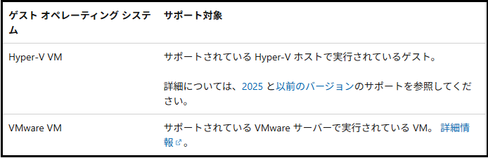
② 仮想マシンの作成・テンプレート化
SCVMM から仮想マシンを作成、テンプレート化する場合は、対象のゲスト OS が SCVMM のサポート対象である必要があります。
特に Linux VM では、Linux ディストリビューションが Linux 用 VMM ゲスト エージェントのサポート対象であることをご確認ください。サポート対象外の OS では、テンプレートの作成や展開が正常に完了しない可能性があります。
サポート対象の Linux OS につきましては、以下の公開情報をご確認ください。
- VMM の新機能
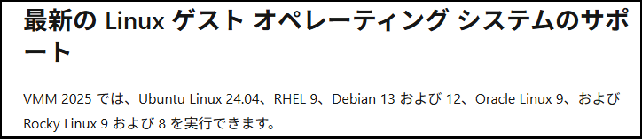
サポート対象の Linux OS は、Update Rollup で追加される場合があります。ご利用の SCVMM バージョンに対応する最新のリリース ノートもご確認ください。
2026 年 9 月現在、SCVMM 2025 の最新リリースは Update Rollup 1 です。
テンプレートの作成手順と展開手順について
SCVMM 2025 UR1 にてサポート対象に追加された RHEL10 を例に、テンプレートの作成手順と展開手順をご紹介します。
１．SCVMM コンソールにて RHEL10 の仮想マシンを作成
SCVMM コンソールから、仮想マシンの作成ウィザードを起動します。
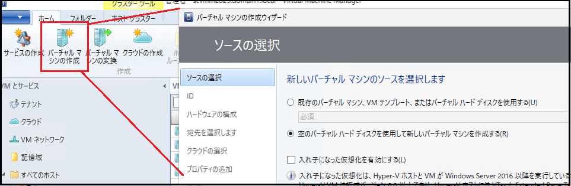
注意
Linux VM で第 2 世代を選択する場合、セキュア ブート テンプレートには
MicrosoftUEFICertificateAuthorityを指定します。
- Hyper-V 第 2 世代仮想マシンのセキュリティ機能
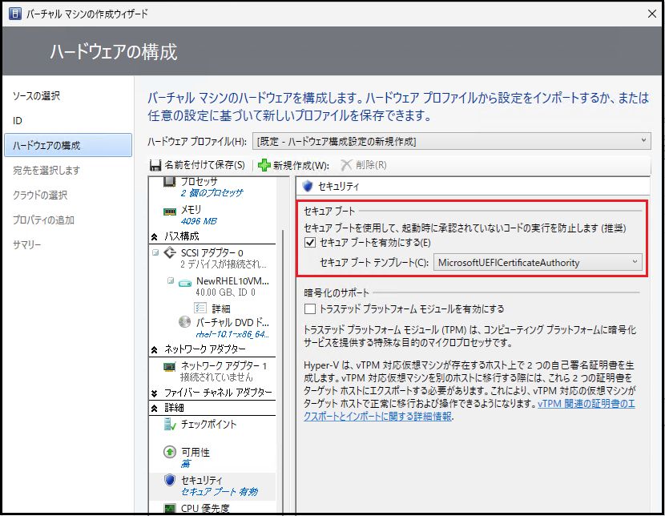
RHEL 10 は SCVMM 2025 UR1 からサポート対象となっているため、ゲスト OS の一覧から選択できます。
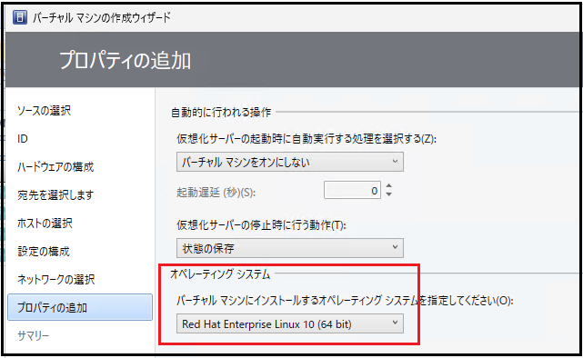
空の仮想マシンが作成されたら、RHEL 10 の ISO イメージをマウントして OS をインストールします。
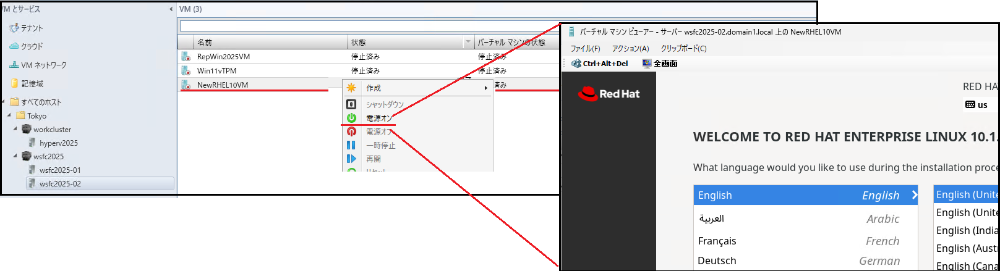
今回はマスター VM の動作確認用として、デスクトップにテキスト ファイルを配置しておきます。
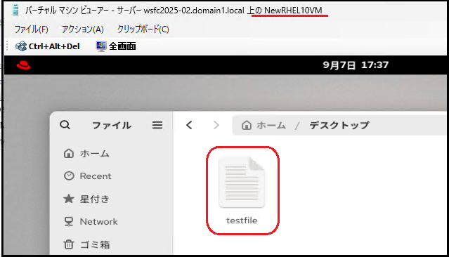
２．Linux 用 VMM ゲスト エージェント をインストール
テンプレート化するマスター VM の準備が完了したら、Linux 用 VMM ゲスト エージェントをインストールします。
Linux 用 VMM ゲスト エージェントのインストール用ファイルは、SCVMM 管理サーバーの以下のフォルダーに格納されています。
使用するファイルは [install] ファイルと [scvmmguestagent.***.x64.tar] ファイルの２つのファイルです。
C:\Program Files\Microsoft System Center\Virtual Machine Manager\agents\Linuxゲスト エージェントのモジュールは Update Rollup ごとに異なるため、SCVMM 管理サーバーのバージョンに対応するファイルを使用してください。SCVMM 2025 UR1 では、[scvmmguestagent.1.0.4.1032.x64.tar] を使用します。
これらのファイルを Linux VM にコピーし、実行権限を付与した後、次のコマンドでインストールします。
sudo chmod +x install
sudo ./install scvmmguestagent.1.0.0.544.x64.tar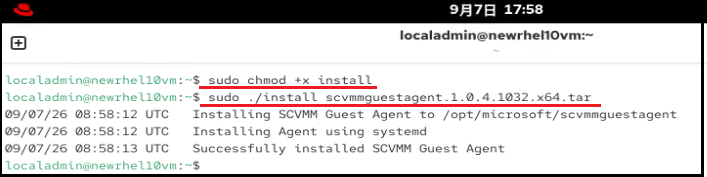
念のため、一度 OS を再起動し、以下のコマンドでゲスト エージェントの状態を確認します。
正常に起動していた場合、テンプレート化の準備は完了です。
sudo systemctl status scvmmguestagent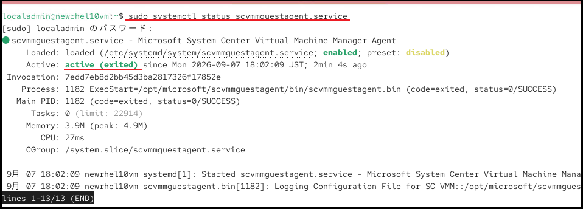
３．仮想マシンをシャットダウンし、仮想マシンをライブラリに保管
仮想マシンをシャットダウンした後、対象の仮想マシンをホストする Hyper-V ホストにログインし、仮想ハード ディスクを SCVMM のライブラリ共有にコピーします。
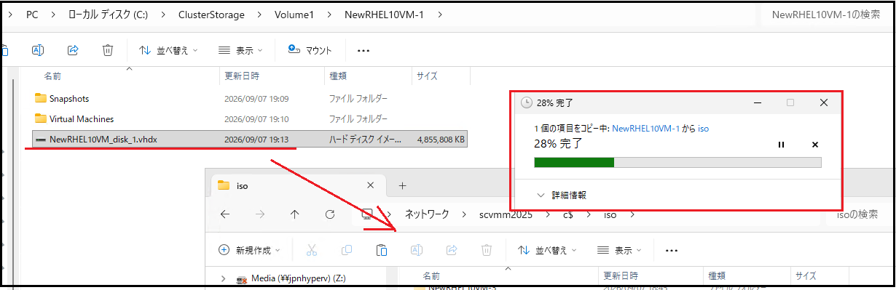
ライブラリ共有にコピーされたことを確認します。
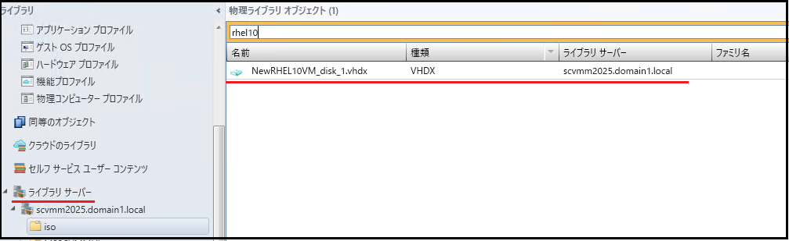
４．SCVMM コンソールからテンプレートとして登録
SCVMM コンソールで仮想ディスクを選択し、VM テンプレートの作成を開始します。
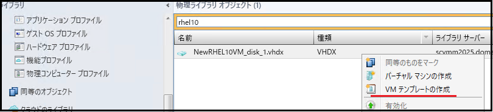
ハードウェア構成や OS の設定を確認し、必要に応じて変更したうえでテンプレートを作成します。
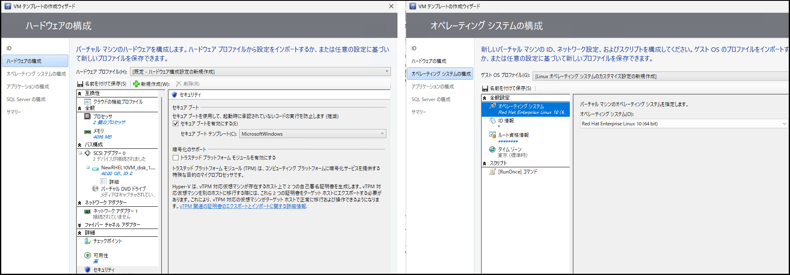
以上で、VM テンプレートの作成は完了です。
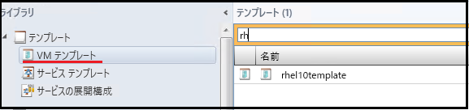
５．テンプレートから新しい仮想マシンを展開
SCVMM コンソールから仮想マシンの作成ウィザードを起動し、作成したテンプレートを選択します。
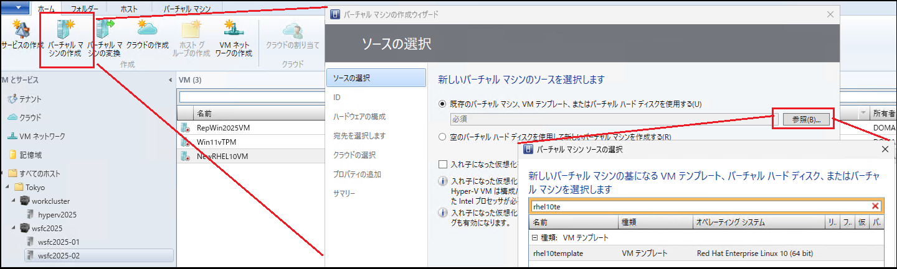
ハードウェア構成や OS の設定には、テンプレートの設定を引き継ぐことができます。必要に応じて、仮想マシン名やネットワーク設定などを変更します。ここでは、コンピューター名を「VMbyTemplate」に設定します。
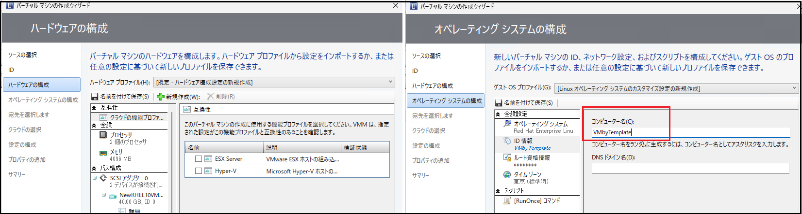
ウィザードを完了すると、テンプレートから新しい仮想マシンが展開されます。
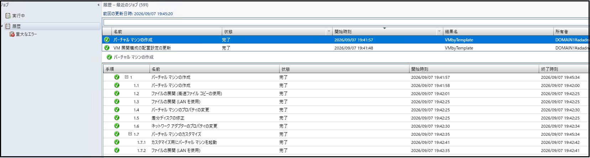
展開された仮想マシンを起動します。
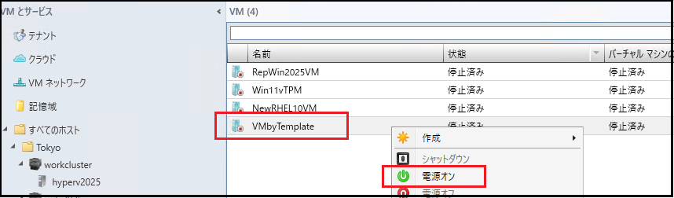
仮想マシンにログインし、コンピューター名が「VMbyTemplate」に設定されていることを確認します。また、マスター VM で作成したテキストファイルが引き継がれていることも確認できます。
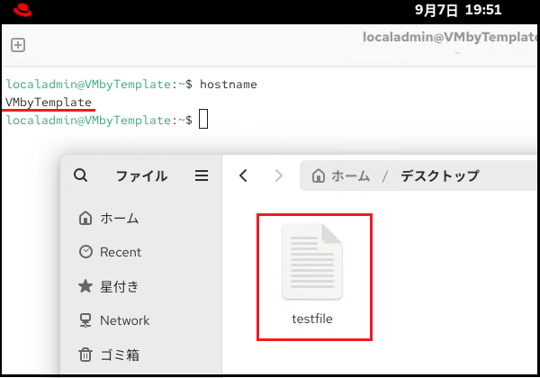
テンプレート仮想マシンに関する補足情報
SCVMMによるテンプレート化では、仮想マシン内の情報を初期化する処理は行われません。このため、マスター VM に含まれる情報のうち、展開後の仮想マシンへ引き継ぐ必要がないものは、あらかじめ削除しておくことを推奨します。
また、Linux VMをテンプレート化した場合、Linux用VMMゲストエージェントはインストールされた状態で引き継がれます。テンプレートから展開した仮想マシンで不要な場合は、手動で削除してください。
以上で、SCVMM テンプレートを用いた仮想マシンの展開方法のご紹介は終了です。
本記事が、仮想マシンの展開の効率化の一助となれば幸いです。
※本情報の内容（添付文書、リンク先などを含む）は、作成日時点でのものであり、予告なく変更される場合があります。